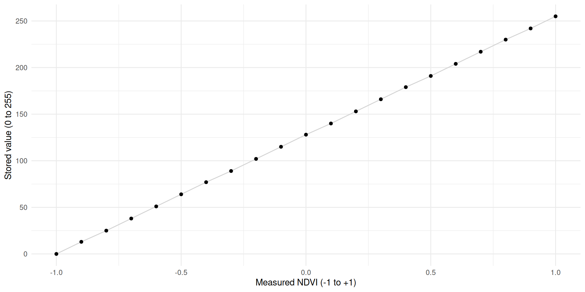
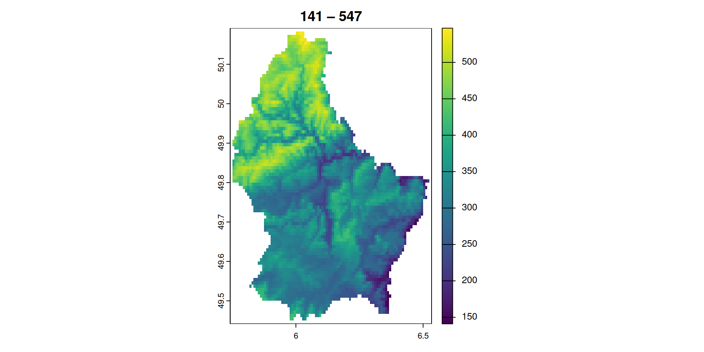
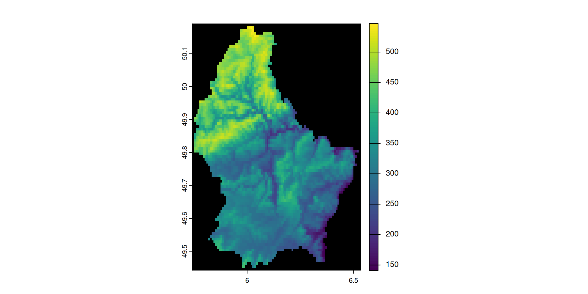
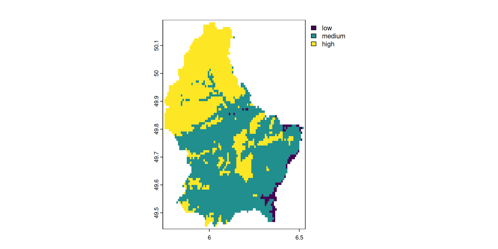

scale_minmax <- function(x, a = 0, b = 255) {
x_new <- a + (x - min(x)) * (b - a) / (max(x) - min(x))
round(x_new, 0)
}
measured_ndvi <- seq(-1, 1, 0.1)
stored_value <- scale_minmax(measured_ndvi)Spatiotemporal Data Science · FS26
gdal raster convertgdal raster reprojectconda — manage environments and packagespip — install Python packagesgit — version controlprogram subcommand flag flag-value argument
↓ ↓ ↓ ↓ ↓
conda install -c conda-forge gdal
⎺⎺⎺ ⎺⎺⎺⎺⎺ ⎺⎺ ⎺⎺⎺⎺⎺⎺⎺ ⎺⎺-c is shorthand for --channel- prefix)gdal <noun> <verb>| Task | Old API | New API (3.11+) |
|---|---|---|
| Inspect | gdalinfo |
gdal raster info |
| Convert | gdal_translate |
gdal raster convert |
| Reproject | gdalwarp |
gdal raster reproject |
GDAL is non-destructive by design — it always reads from a source and writes to a new destination:
gdal raster reproject --dst-crs EPSG:2056 input.tif output.tif
───────── ──────────
source new file, never touches source<input> and <output> argumentsException: gdal edit — metadata-only changes (CRS, NoData, scale/offset) can be applied in place
| Data type | Minimum | Maximum | Size | Factor |
|---|---|---|---|---|
| Byte | 0 | 255 | 39M | 1x |
| UInt16 | 0 | 65,535 | 78M | 2x |
| Int16 / CInt16 | -32,768 | 32,767 | 78M | 2x |
| UInt32 | 0 | 4,294,967,295 | 155M | ~4x |
| Int32 / CInt32 | -2,147,483,648 | 2,147,483,647 | 155M | ~4x |
| Float32 / CFloat32 | -3.4E38 | 3.4E38 | 155M | ~4x |
| Float64 / CFloat64 | -1.79E308 | 1.79E308 | 309M | ~8x |
Float32)| Data | Data Range | Naive type | Smart type | New Range |
|---|---|---|---|---|
| Fraction | 0-1 |
Float32 |
Byte |
0 - 100 |
| NDVI | -1-+1 |
CFloat32 |
Byte |
0 - 255 |
| Temp | -20 - +40 |
CFloat32 |
CInt16 |
–2000 - 4000 |
General formula to rescale \(x\) into range \([a, b]\):
\[x' = a + \frac{(x - \min(x))\,(b - a)}{\max(x) - \min(x)}\]
For NDVI (\(x \in [-1,\,1]\), target \([a, b] = [0,\,255]\)):
\[x' = 0 + \frac{(x - (-1))\,\times\,255}{1-(-1)} = \frac{(x+1)\times 255}{2}\]
Simplified:
\[\boxed{x' = 127.5\,x + 127.5}\]
→ e.g. NDVI 0.2 is stored as \(127.5 \times 0.2 + 127.5 = 153\)
Storing NDVI in Byte limits us to 256 distinct values:
\[\text{precision} = \frac{\max(x) - \min(x)}{b - a} = \frac{1 - (-1)}{255 - 0} \approx 0.0078\]
→ Every stored NDVI is rounded to the nearest 0.0078
For most vegetation mapping applications, NDVI differences below ~0.01 are not ecologically meaningful → Byte precision is usually sufficient
Need finer precision? Use UInt16 (0–65,535): \(\frac{2}{65535} \approx 0.00003\)

scale and offsetterra::writeRaster supports scale = and offset = arguments — it transforms on write, inverts on read.scale and offset can be derived by the min-max formula\[\text{scale} = \frac{b - a}{\max(x) - \min(x)}, \qquad \text{offset} = \frac{a\,\max(x) - b\,\min(x)}{\max(x) - \min(x)}\]
writeRaster divides by scale: stored = (x − offset) / scale
writeRaster subtracts offset; for a = 0 this simplifies to min_x
min())

$scale
[1] 1.592157
$offset
[1] 141Scale and offset are visible in the file metadata — any GDAL-powered tool can read them:
Extracting file (meta) data
gdal raster info lists information about a raster datasetelev-lux.tif — a small elevation model of Luxembourg — as our running example--help:Usage: gdal raster info [OPTIONS] <INPUT>
Return information on a raster dataset.
Positional arguments:
-i, --dataset, --input <INPUT> Input raster dataset [required]
Common Options:
-h, --help Display help message and exit
--json-usage Display usage as JSON document and exit
--config <KEY>=<VALUE> Configuration option [may be repeated]
Options:
-f, --of, --format, --output-format <OUTPUT-FORMAT> Output format. OUTPUT-FORMAT=json|text (default: json)
--mm, --min-max Compute minimum and maximum value
--stats Retrieve or compute statistics, using all pixels
Mutually exclusive with --approx-stats
--approx-stats Retrieve or compute statistics, using a subset of pixels
Mutually exclusive with --stats
--hist Retrieve or compute histogram
Advanced Options:
--oo, --open-option <KEY>=<VALUE> Open options [may be repeated]
--if, --input-format <INPUT-FORMAT> Input formats [may be repeated]
--no-gcp Suppress ground control points list printing
--no-md Suppress metadata printing
--no-ct Suppress color table printing
--no-fl Suppress file list printing
--checksum Compute pixel checksum
--list-metadata-domains, --list-mdd List all metadata domains available for the dataset
--mdd, --metadata-domain <METADATA-DOMAIN> Report metadata for the specified domain. 'all' can be used to report metadata in all domains
Esoteric Options:
--no-nodata Suppress retrieving nodata value
--no-mask Suppress mask band information
--subdataset <SUBDATASET> Use subdataset of specified index (starting at 1), instead of the source dataset itself
For more details, consult https://gdal.org/programs/gdal_raster_info.html
WARNING: the gdal command is provisionally provided as an alternative interface to GDAL and OGR command line utilities.
The project reserves the right to modify, rename, reorganize, and change the behavior of the utility
until it is officially frozen in a future feature release of GDAL.Driver: GTiff/GeoTIFF
Files: data/raster-deepdive/elev-lux.tif
data/raster-deepdive/elev-lux.tif.aux.xml
Size is 95, 90
Coordinate System is:
GEOGCRS["WGS 84",
ENSEMBLE["World Geodetic System 1984 ensemble",
MEMBER["World Geodetic System 1984 (Transit)"],
MEMBER["World Geodetic System 1984 (G730)"],
MEMBER["World Geodetic System 1984 (G873)"],
MEMBER["World Geodetic System 1984 (G1150)"],
MEMBER["World Geodetic System 1984 (G1674)"],
MEMBER["World Geodetic System 1984 (G1762)"],
MEMBER["World Geodetic System 1984 (G2139)"],
MEMBER["World Geodetic System 1984 (G2296)"],
ELLIPSOID["WGS 84",6378137,298.257223563,
LENGTHUNIT["metre",1]],
ENSEMBLEACCURACY[2.0]],
PRIMEM["Greenwich",0,
ANGLEUNIT["degree",0.0174532925199433]],
CS[ellipsoidal,2],
AXIS["geodetic latitude (Lat)",north,
ORDER[1],
ANGLEUNIT["degree",0.0174532925199433]],
AXIS["geodetic longitude (Lon)",east,
ORDER[2],
ANGLEUNIT["degree",0.0174532925199433]],
USAGE[
SCOPE["Horizontal component of 3D system."],
AREA["World."],
BBOX[-90,-180,90,180]],
ID["EPSG",4326]]
Data axis to CRS axis mapping: 2,1
Origin = (5.741666666666666,50.191666666666663)
Pixel Size = (0.008333333333333,-0.008333333333333)
Metadata:
AREA_OR_POINT=Area
Image Structure Metadata:
COMPRESSION=LZW
INTERLEAVE=BAND
Corner Coordinates:
Upper Left ( 5.7416667, 50.1916667) ( 5d44'30.00"E, 50d11'30.00"N)
Lower Left ( 5.7416667, 49.4416667) ( 5d44'30.00"E, 49d26'30.00"N)
Upper Right ( 6.5333333, 50.1916667) ( 6d32' 0.00"E, 50d11'30.00"N)
Lower Right ( 6.5333333, 49.4416667) ( 6d32' 0.00"E, 49d26'30.00"N)
Center ( 6.1375000, 49.8166667) ( 6d 8'15.00"E, 49d49' 0.00"N)
Band 1 Block=95x43 Type=Int16, ColorInterp=Gray
Description = elevation
Min=141.000 Max=547.000
Minimum=141.000, Maximum=547.000, Mean=-9999.000, StdDev=-9999.000
NoData Value=-32768
Metadata:
STATISTICS_MINIMUM=141
STATISTICS_MAXIMUM=547
STATISTICS_MEAN=-9999
STATISTICS_STDDEV=-9999-f) can either be text or to jsonjson is structured and machine readable{
"description":"data/raster-deepdive/elev-lux.tif",
"driverShortName":"GTiff",
"driverLongName":"GeoTIFF",
"files":[
"data/raster-deepdive/elev-lux.tif",
"data/raster-deepdive/elev-lux.tif.aux.xml"
],
"size":[
95,
90
],
"coordinateSystem":{
"wkt":"GEOGCRS[\"WGS 84\",\n ENSEMBLE[\"World Geodetic System 1984 ensemble\",\n MEMBER[\"World Geodetic System 1984 (Transit)\"],\n MEMBER[\"World Geodetic System 1984 (G730)\"],\n MEMBER[\"World Geodetic System 1984 (G873)\"],\n MEMBER[\"World Geodetic System 1984 (G1150)\"],\n MEMBER[\"World Geodetic System 1984 (G1674)\"],\n MEMBER[\"World Geodetic System 1984 (G1762)\"],\n MEMBER[\"World Geodetic System 1984 (G2139)\"],\n MEMBER[\"World Geodetic System 1984 (G2296)\"],\n ELLIPSOID[\"WGS 84\",6378137,298.257223563,\n LENGTHUNIT[\"metre\",1]],\n ENSEMBLEACCURACY[2.0]],\n PRIMEM[\"Greenwich\",0,\n ANGLEUNIT[\"degree\",0.0174532925199433]],\n CS[ellipsoidal,2],\n AXIS[\"geodetic latitude (Lat)\",north,\n ORDER[1],\n ANGLEUNIT[\"degree\",0.0174532925199433]],\n AXIS[\"geodetic longitude (Lon)\",east,\n ORDER[2],\n ANGLEUNIT[\"degree\",0.0174532925199433]],\n USAGE[\n SCOPE[\"Horizontal component of 3D system.\"],\n AREA[\"World.\"],\n BBOX[-90,-180,90,180]],\n ID[\"EPSG\",4326]]",
"dataAxisToSRSAxisMapping":[
2,
1
]
},
"geoTransform":[
5.7416666666666663,
0.0083333333333333,
0.0,
50.1916666666666629,
0.0,
-0.0083333333333333
],
"metadata":{
"":{
"AREA_OR_POINT":"Area"
},
"IMAGE_STRUCTURE":{
"COMPRESSION":"LZW",
"INTERLEAVE":"BAND"
}
},
"cornerCoordinates":{
"upperLeft":[
5.7416667,
50.1916667
],
"lowerLeft":[
5.7416667,
49.4416667
],
"lowerRight":[
6.5333333,
49.4416667
],
"upperRight":[
6.5333333,
50.1916667
],
"center":[
6.1375,
49.8166667
]
},
"wgs84Extent":{
"type":"Polygon",
"coordinates":[
[
[
5.7416667,
50.1916667
],
[
5.7416667,
49.4416667
],
[
6.5333333,
49.4416667
],
[
6.5333333,
50.1916667
],
[
5.7416667,
50.1916667
]
]
]
},
"bands":[
{
"band":1,
"block":[
95,
43
],
"type":"Int16",
"colorInterpretation":"Gray",
"description":"elevation",
"min":141.0,
"max":547.0,
"minimum":141.0,
"maximum":547.0,
"mean":-9999.0,
"stdDev":-9999.0,
"noDataValue":-32768,
"metadata":{
"":{
"STATISTICS_MINIMUM":"141",
"STATISTICS_MAXIMUM":"547",
"STATISTICS_MEAN":"-9999",
"STATISTICS_STDDEV":"-9999"
}
}
}
],
"stac":{
"proj:shape":[
90,
95
],
"proj:wkt2":"GEOGCRS[\"WGS 84\",\n ENSEMBLE[\"World Geodetic System 1984 ensemble\",\n MEMBER[\"World Geodetic System 1984 (Transit)\"],\n MEMBER[\"World Geodetic System 1984 (G730)\"],\n MEMBER[\"World Geodetic System 1984 (G873)\"],\n MEMBER[\"World Geodetic System 1984 (G1150)\"],\n MEMBER[\"World Geodetic System 1984 (G1674)\"],\n MEMBER[\"World Geodetic System 1984 (G1762)\"],\n MEMBER[\"World Geodetic System 1984 (G2139)\"],\n MEMBER[\"World Geodetic System 1984 (G2296)\"],\n ELLIPSOID[\"WGS 84\",6378137,298.257223563,\n LENGTHUNIT[\"metre\",1]],\n ENSEMBLEACCURACY[2.0]],\n PRIMEM[\"Greenwich\",0,\n ANGLEUNIT[\"degree\",0.0174532925199433]],\n CS[ellipsoidal,2],\n AXIS[\"geodetic latitude (Lat)\",north,\n ORDER[1],\n ANGLEUNIT[\"degree\",0.0174532925199433]],\n AXIS[\"geodetic longitude (Lon)\",east,\n ORDER[2],\n ANGLEUNIT[\"degree\",0.0174532925199433]],\n USAGE[\n SCOPE[\"Horizontal component of 3D system.\"],\n AREA[\"World.\"],\n BBOX[-90,-180,90,180]],\n ID[\"EPSG\",4326]]",
"proj:epsg":4326,
"proj:projjson":{
"$schema":"https://proj.org/schemas/v0.7/projjson.schema.json",
"type":"GeographicCRS",
"name":"WGS 84",
"datum_ensemble":{
"name":"World Geodetic System 1984 ensemble",
"members":[
{
"name":"World Geodetic System 1984 (Transit)",
"id":{
"authority":"EPSG",
"code":1166
}
},
{
"name":"World Geodetic System 1984 (G730)",
"id":{
"authority":"EPSG",
"code":1152
}
},
{
"name":"World Geodetic System 1984 (G873)",
"id":{
"authority":"EPSG",
"code":1153
}
},
{
"name":"World Geodetic System 1984 (G1150)",
"id":{
"authority":"EPSG",
"code":1154
}
},
{
"name":"World Geodetic System 1984 (G1674)",
"id":{
"authority":"EPSG",
"code":1155
}
},
{
"name":"World Geodetic System 1984 (G1762)",
"id":{
"authority":"EPSG",
"code":1156
}
},
{
"name":"World Geodetic System 1984 (G2139)",
"id":{
"authority":"EPSG",
"code":1309
}
},
{
"name":"World Geodetic System 1984 (G2296)",
"id":{
"authority":"EPSG",
"code":1383
}
}
],
"ellipsoid":{
"name":"WGS 84",
"semi_major_axis":6378137,
"inverse_flattening":298.257223563
},
"accuracy":"2.0",
"id":{
"authority":"EPSG",
"code":6326
}
},
"coordinate_system":{
"subtype":"ellipsoidal",
"axis":[
{
"name":"Geodetic latitude",
"abbreviation":"Lat",
"direction":"north",
"unit":"degree"
},
{
"name":"Geodetic longitude",
"abbreviation":"Lon",
"direction":"east",
"unit":"degree"
}
]
},
"scope":"Horizontal component of 3D system.",
"area":"World.",
"bbox":{
"south_latitude":-90,
"west_longitude":-180,
"north_latitude":90,
"east_longitude":180
},
"id":{
"authority":"EPSG",
"code":4326
}
},
"proj:transform":[
5.7416666666666663,
0.0083333333333333,
0.0,
50.1916666666666629,
0.0,
-0.0083333333333333
],
"raster:bands":[
{
"data_type":"int16",
"stats":{
"minimum":141.0,
"maximum":547.0,
"mean":-9999.0,
"stddev":-9999.0
},
"nodata":-32768
}
],
"eo:bands":[
{
"name":"b1",
"description":"elevation"
}
]
}
}jq — a lightweight command-line JSON processor
.key (field access) and [] (array iteration)conda install -c conda-forge jqExtract a single field — .bands[] iterates over bands, .min selects the field:
Extract histogram buckets and visualise with bashplotlib:
19| +
18| +
17| +
16| +
15| +
14| +
13| +
12| + +
11| + +
10| ++ ++ +
9| ++ ++++ + +
8| +++++++ + + +
7| ++++++++ ++++ + ++ + +
6| ++++++++ ++++ + +++ + +
5| +++++++++++++ + ++++ + ++ +
4| ++++++++++++++++ ++++++ + ++ ++ +
3| +++++++++++++++++++++++ ++ ++ ++ + + + + + +
2| +++++++++++++++++++++++++++++ ++++ + + ++ + + + + + +
1| ++++++++++++++++++++++++++++++++++ ++++++++ + +++ +++ +++ + + + ++
----------------------------------------------------------------------NoData in the file metadata→ Any software reading the file interprets that reserved value as missing, not as a real measurement
For integer types, the reserved value must fit within the datatype’s range:
| Datatype | Common NoData reserved value |
|---|---|
Byte |
255 (max value) |
Int16 |
−32,768 (min value) |
Float321 |
NaN or −9999 |
Risk (integer types): if real data happens to contain the reserved value → those cells silently become NoData
Inspect and set the NoData flag:
# Only use 0 - 254, so that 255 is availalable for "NoData"
so <- get_scale_offset(elev, a = 0, b = 254)
# write with an explicit NoData flag
writeRaster(elev, "data-out/elev_naflag.tif", datatype = "INT1U", overwrite = TRUE,
scale = so$scale, offset = so$offset, NAflag = 255)
# read back — terra interprets 255 as NA automatically
elev_back <- rast("data-out/elev_naflag.tif")
plot(elev_back, colNA = "black")
Note that the maximum elevation values are now NA
The reserved value and its NoData label are both visible in the metadata:
→ Analogous to R’s factor: an underlying integer + a levels table
→ Choose the smallest integer type that covers the number of categories — Byte handles up to 255 classes
0-200, 200-350 and 350-550)
low, medium and high

Int16 (2 bytes/pixel):\[3601 \times 3601 \times 2\,\text{B} = 25{,}934{,}402\,\text{B} \approx 25.9\,\text{MB}\]
| Lossless | Lossy | |
|---|---|---|
| Data preserved? | Perfectly | Approximated |
| Use case | Scientific data (DEM, multispectral) | Photographic / visual imagery |
| Examples | LZW, DEFLATE, ZSTD, PACKBITS | JPEG2000, WEBP |
→ For scientific analysis always use lossless — lossy compression permanently alters pixel values
Exploit repeated values — store each unique value once, track its positions:
| Original | 100, 101, 102, 100, 100 |
| Compressed | 100 → positions [0, 3, 4] 101 → positions [1] 102 → positions [2] |
→ 5 values encoded as 3 unique values + a position list
Works best when data contains many repeated or near-repeated values (flat terrain, uniform land cover)
LZW, DEFLATE, and ZSTD can use a predictor to improve compression further:
→ Store differences between consecutive values instead of absolute values
| Original | 100 |
101 |
102 |
100 |
100 |
| With predictor | 100 |
+1 |
+1 |
−2 |
0 |
Small differences compress better than large absolute values
| Option | Use for |
|---|---|
PREDICTOR=1 |
No predictor (default) |
PREDICTOR=2 |
Integer data (e.g. DEMs) |
PREDICTOR=3 |
Float data |
TILED=YES stores data in 256 × 256 pixel blocks→ Tiling improves random-access reads and is essential for Cloud-Optimized GeoTIFF (COG)
Compression is not free:
DEFLATE + TILED=YESgdal raster convert converts raster files between formats and applies compression:
Usage: gdal raster convert [OPTIONS] <INPUT> <OUTPUT>
Convert a raster dataset.
Positional arguments:
-i, --input <INPUT> Input raster dataset [required]
-o, --output <OUTPUT> Output raster dataset (created by algorithm) [required]
Common Options:
-h, --help Display help message and exit
--json-usage Display usage as JSON document and exit
--config <KEY>=<VALUE> Configuration option [may be repeated]
--progress Display progress bar
Options:
-f, --of, --format, --output-format <OUTPUT-FORMAT> Output format
--co, --creation-option <KEY>=<VALUE> Creation option [may be repeated]
--overwrite Whether overwriting existing output is allowed
Mutually exclusive with --append
--append Append as a subdataset to existing output
Mutually exclusive with --overwrite
Advanced Options:
--oo, --open-option <KEY>=<VALUE> Open options [may be repeated]
--if, --input-format <INPUT-FORMAT> Input formats [may be repeated]
For more details, consult https://gdal.org/programs/gdal_raster_convert.html
WARNING: the gdal command is provisionally provided as an alternative interface to GDAL and OGR command line utilities.
The project reserves the right to modify, rename, reorganize, and change the behavior of the utility
until it is officially frozen in a future feature release of GDAL.Key points:
<input_file> <output_file>--co KEY=VALUE (creation options)--help| File | Size (MB) | Difference |
|---|---|---|
| Original (ASCII) | 824.43 | 0 % |
| GeoTIFF, no compression | 535.91 | -35 % |
| File | Size (MB) | Difference |
|---|---|---|
| Original (ASCII) | 824.43 | 0 % |
| GeoTIFF, no compression | 535.91 | -35 % |
COMPRESS=DEFLATE |
208.24 | -75 % |
| File | Size (MB) | Difference |
|---|---|---|
| Original (ASCII) | 824.43 | 0 % |
| GeoTIFF, no compression | 535.91 | -35 % |
COMPRESS=DEFLATE |
208.24 | -75 % |
TILED=YES |
177.50 | -78 % |
| File | Size (MB) | Difference |
|---|---|---|
| Original (ASCII) | 824.43 | 0 % |
| GeoTIFF, no compression | 535.91 | -35 % |
COMPRESS=DEFLATE |
208.24 | -75 % |
TILED=YES |
177.50 | -78 % |
PREDICTOR=3 |
150.89 | -82 % |
To reproject a raster, we need to know the source CRS. Is this information available?
→ No CRS — consult the data provider: DHM25 uses LV03/LN02 = EPSG:21781
Confirm via corner coordinates:
gdal raster reproject reprojects and transforms raster data<input> and <output>Usage: gdal raster reproject [OPTIONS] <INPUT> <OUTPUT>
Reproject a raster dataset.
Positional arguments:
-i, --input <INPUT> Input raster dataset [required]
-o, --output <OUTPUT> Output raster dataset [required]
Common Options:
-h, --help Display help message and exit
--json-usage Display usage as JSON document and exit
--config <KEY>=<VALUE> Configuration option [may be repeated]
--progress Display progress bar
Options:
-f, --of, --format, --output-format <OUTPUT-FORMAT> Output format ("GDALG" allowed)
--co, --creation-option <KEY>=<VALUE> Creation option [may be repeated]
--overwrite Whether overwriting existing output is allowed
-s, --src-crs <SRC-CRS> Source CRS
-d, --dst-crs <DST-CRS> Destination CRS
-r, --resampling <RESAMPLING> Resampling method. RESAMPLING=nearest|bilinear|cubic|cubicspline|lanczos|average|rms|mode|min|max|med|q1|q3|sum (default: nearest)
--resolution <xres>,<yres> Target resolution (in destination CRS units)
Mutually exclusive with --size
--size <width>,<height> Target size in pixels
Mutually exclusive with --resolution
--bbox <BBOX> Target bounding box (in destination CRS units)
--bbox-crs <BBOX-CRS> CRS of target bounding box
Advanced Options:
--if, --input-format <INPUT-FORMAT> Input formats [may be repeated]
--oo, --open-option <KEY>=<VALUE> Open options [may be repeated]
--target-aligned-pixels Round target extent to target resolution
--src-nodata <SRC-NODATA> Set nodata values for input bands ('None' to unset). [1.. values]
--dst-nodata <DST-NODATA> Set nodata values for output bands ('None' to unset). [1.. values]
--add-alpha Adds an alpha mask band to the destination when the source raster have none.
--wo, --warp-option <NAME>=<VALUE> Warping option(s) [may be repeated]
--to, --transform-option <NAME>=<VALUE> Transform option(s) [may be repeated]
--et, --error-threshold <ERROR-THRESHOLD> Error threshold
For more details, consult https://gdal.org/programs/gdal_raster_reproject.html
WARNING: the gdal command is provisionally provided as an alternative interface to GDAL and OGR command line utilities.
The project reserves the right to modify, rename, reorganize, and change the behavior of the utility
until it is officially frozen in a future feature release of GDAL.DHM25 has no embedded CRS → specify source and target explicitly:
0...10...20...30...40...50...60...70...80...90...100 - done.Compare before and after — coordinates should shift from LV03 to LV95 range:
All three strategies reduce on-disk file size — but they work at different levels:
| Tool | Targets | Mechanism |
|---|---|---|
| Datatype | Per-pixel cost | 1 byte (Byte) vs 4 bytes (Float32) |
| Scale / offset | Value range | Rescale floats to fit a smaller integer type |
| Compression | Spatial redundancy | Exploit repeated values across pixels |
→ They are complementary — apply all three for maximum effect
→ Order matters: choose datatype first, then compress
When writing a raster to disk:
scale / offset in writeRasterNAflag (integer types) or use NaN (float types)COMPRESS=DEFLATE + TILED=YES
PREDICTOR=2 for integer data, PREDICTOR=3 for float dataDefault recommendation for most scientific rasters:
INT1U / Int16 + scale/offset + DEFLATE + TILED=YES + PREDICTOR=2